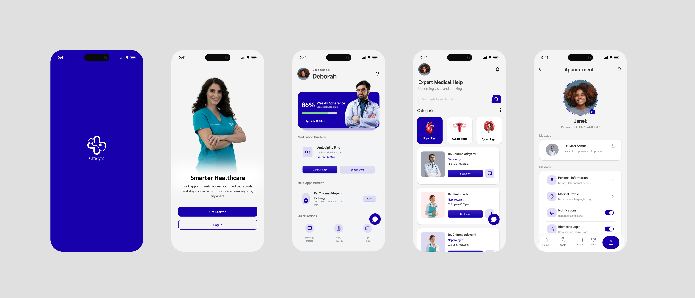
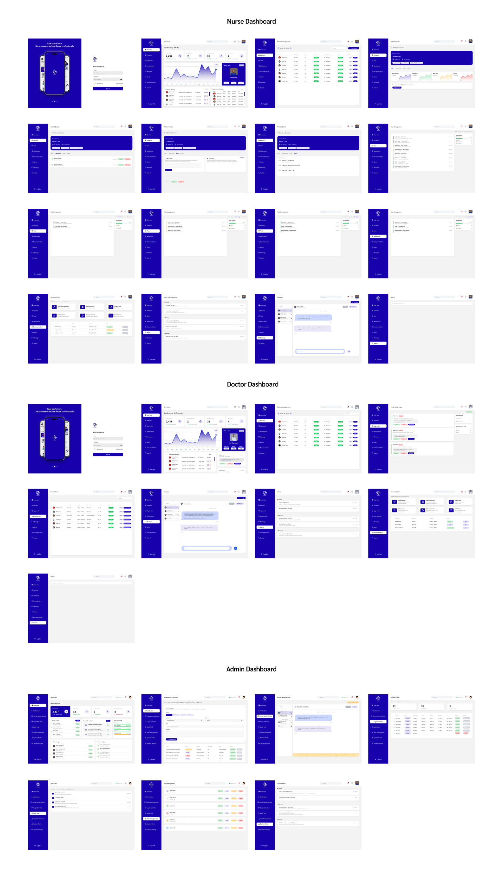
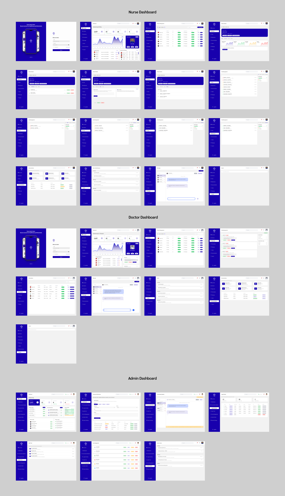

Redesigning how doctors, nurses, and patients interact through one unified, real-time platform built around clinical workflows that actually exist.
They are failing because:
Doctors, nurses, and patients use different systems that do not communicate, leading to delays, confusion, and errors.
Research shows that healthcare UX must be based on real workflows, not assumptions, using interviews, workflow analysis, and persona mapping to understand users properly (Neuron)
Doctors and nurses spend more time:
This slows down care.
Patient data is:
All operate separately.
I started by understanding how the system works in real life.
First, I mapped how hospitals currently operate:
This helped me understand where breakdown happens in the workflow
I focused on three main user groups:
Instead of asking what features they want, I focused on:
This approach is important because healthcare UX research focuses on real tasks and frustrations, not feature requests (UX Studio)
They helped answer questions like:
The system must match how each user thinks and works. Key Insight
Decision: Create one shared patient record.
Why: Without a single source of truth:
Decision: Same data, different interfaces.
Why: Each user has different goals:
Decision: Every action must return a result.
Flow: nurse updates → doctor reviews → patient sees outcome
Why: Prevents:
Decision: All updates must be approved by a doctor.
Why: From research:
This ensures:
Decision: No separate chat system.
Why: Research showed:
Solution: Communication happens inside patient profile.
Decision: All updates are instant.
Why: Healthcare decisions depend on:
Designed based on patient persona.
Features:
Designed based on nurse persona.
Features:
Designed based on doctor persona.
Features:
Users prefer clarity over complexity in healthcare systems (Aufait UX)
Too much information slows decisions and increases risk (Aufait UX)
Healthcare users focus on completing tasks, not exploring systems
Immediate updates improve efficiency and care quality
Suggest actions based on patient data
Only show what requires action
Track hospital performance
Connect with wearables for real-time tracking
11 Final Designs
The final dashboard uses a dark teal and warm paper palette to balance professionalism with warmth. Every screen below solves a specific problem identified in research.
Care Sync Screen Breakdown
Key screens from the final design, annotated with their purpose



It was about:
"A system where every design choice is intentional,
every action is connected,
and every user can do their job better."